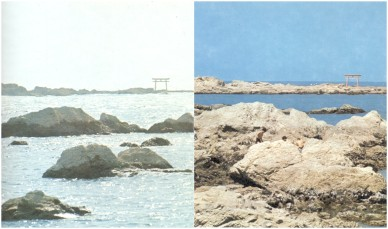

Voda u morima se izdiže i spušta dva puta dnevno zato što je privlači Sunčeva i Mesečeva gravitacija. Iako je Sunčeva masa daleko veća od Mesečeve, Mesec nam je toliko blizu da je njegova privlačna sila 2.5 puta veća prema vodenoj masi na Zemlji od Sunčeve. Zato se vodene površine okrenute Mesecu izdižu. To je pojava plime. Na suprotnoj strani Zemlje Mesečeva gravitacija privlači jače čvrsto Zemljino telo, tako da vodene mase zaostaju za njim, pa se i tamo u isto vreme javlja plima, samo nešto manja. Na mestima između ove dve plime voda se spušta i javlja se oseka. Iako se Zemlja obrće, plima ostaje uvek na mestima okrenutim Mesecu i na suprotnim mestima na Zemlji. Zato se na svakom mestu na Zemlji gde je more pojavljuju dve plime i dve oseke na dan.
